Grammar
Назад на головну
Зміст
Англійські часи
Варто розуміти, що в англійській існує три кити, на яких тримається уся граматика — «to be», «to have» та «to do».
Кожен з цих китів може плавати у трьох часах: Present, Past та Future.
У свою чергу, Present, Past і Future впадають у моря Simple, Continuous, Perfect і Perfect Continuous.
До змісту
Present Simple
Present Simple використовують для виразу звичайної, регулярно повторюваної дії.
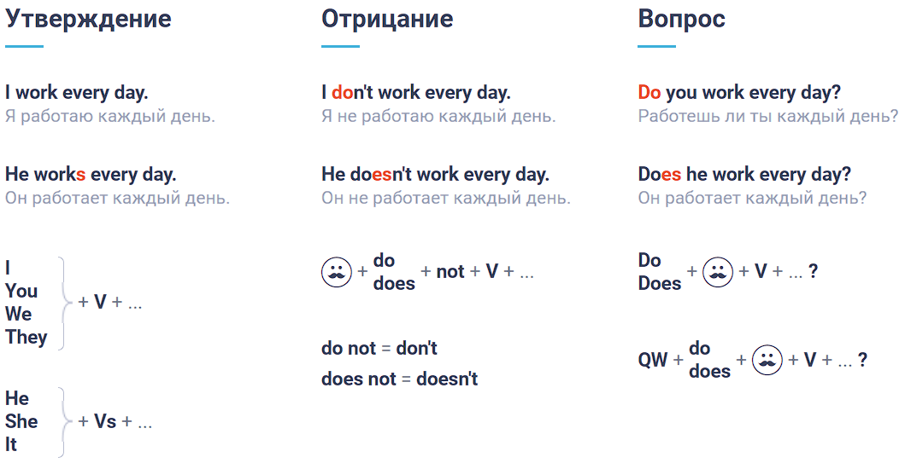
Слова, по яким можна впізнати Present Simple:
Слово
Переклад
always
завжди
often
часто
usually
зазвичай
regularly
постійно
sometimes
інколи
seldom
зрідка
rarely
рідко
never
ніколи
До змісту
Present Continuous
Present Continuous використовують для виразу дії, яка відбувається на даний момент.
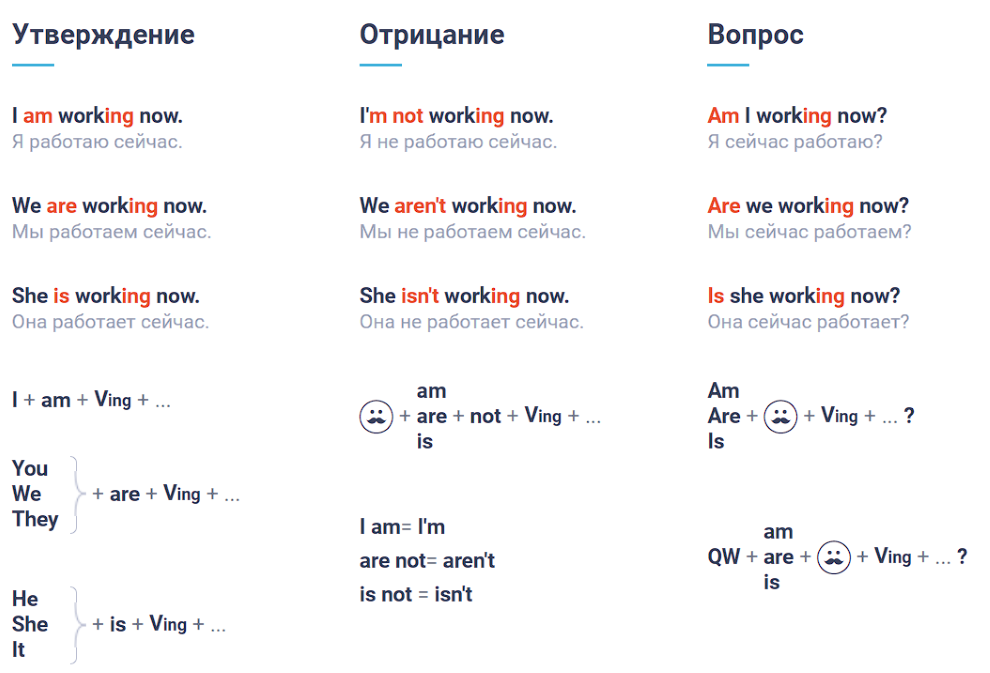
Слово
Переклад
now
зараз
still
все ще
currently
в цей час
at the moment
в цей момент
this morning
цього ранку
today
удень
tonight
ввечері
До змісту
Present Perfect використовують для виразу дії, яка відбулася (або яка відбувається), результат якої зв’язаний з теперішнім.
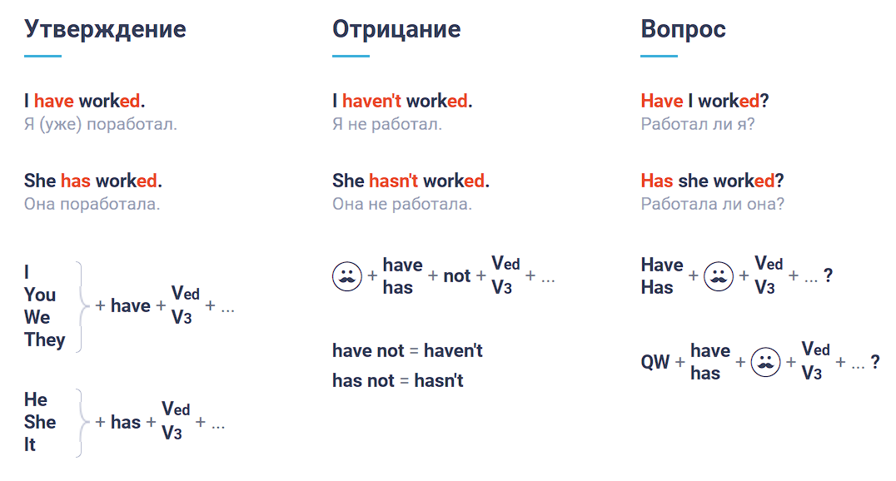
Слово
Переклад
ever
коли-небудь
never
ніколи
already
вже
yet
вже
so far
до сих пір
До змісту
Present Perfect Continuous
Present Perfect Continuous використовують для виразу дії, яка розпочалася в минулому і продовжується у теперішньому часі, або ж важлива тривалість дії.
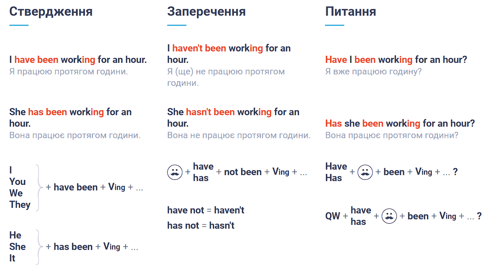
Слово
Переклад
since 10 o’clock
з десятої години
since last month
з минулого місяця
all day
весь день
for 2 hours
протягом двох годин
lately
останнім часом
recently
нещодавно
До змісту
Past Simple
Past Simple використовують для виразу дії, яка відбулася у минулому.
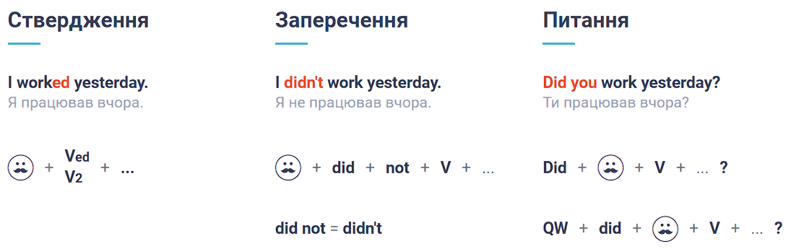
До змісту
Past Continuous
Past Continuous використовують для виразу дії, яка вже відбулася в певний момент часу у минулому.
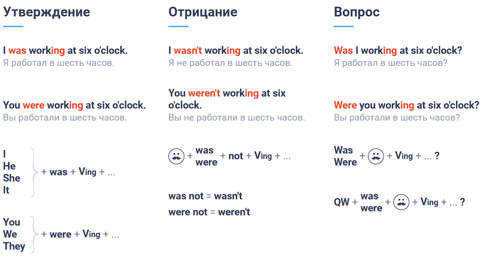
До змісту
Past Perfect
Past Simple використовують для виразу дії, яка відбулася у минулому.
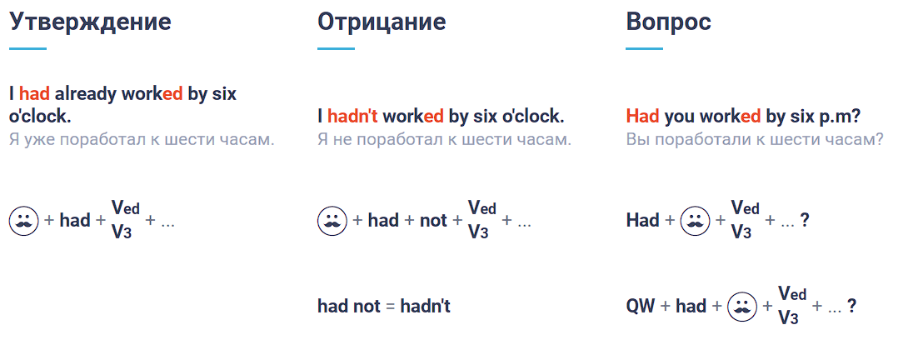
До змісту
Past Perfect Continuous
Past Perfect використовують для виразу дії, яка закінчилася раніше другої дії або певного моменту у минулому.
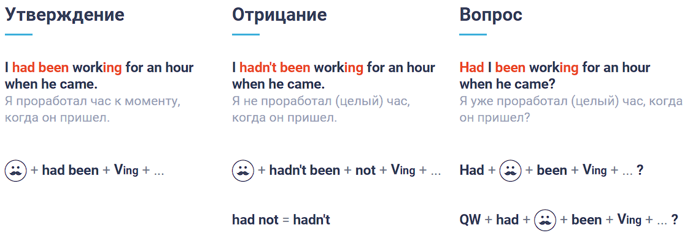
До змісту
Future Simple
Future Simple використовують для виразу дії, яка відбудеться у майбутньому.
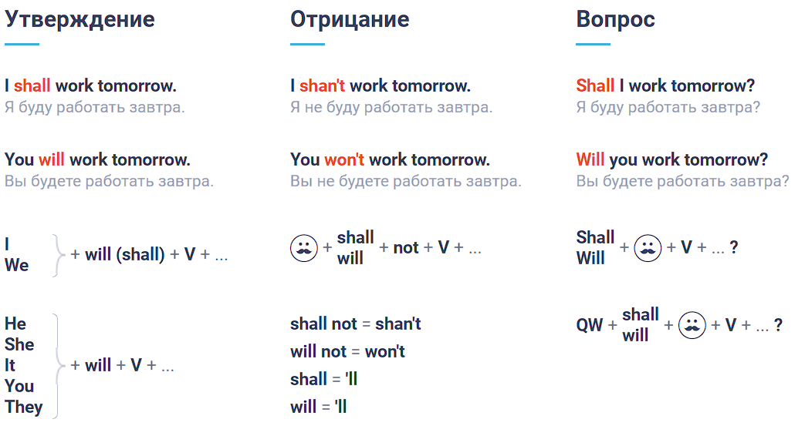
До змісту
Future Continuous
Future Continuous використовують для виразу дії, яка буде відбуватися у певний момент часу в майбутньому.
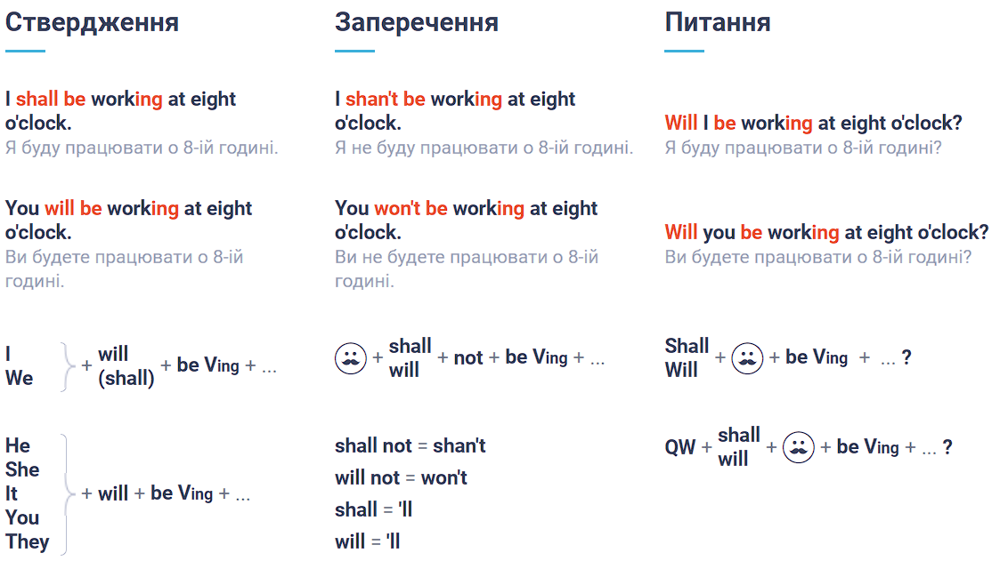
До змісту
Future Perfect
Future Perfect використовують для виразу дії, яка завершиться до певного моменту часу в майбутньому.
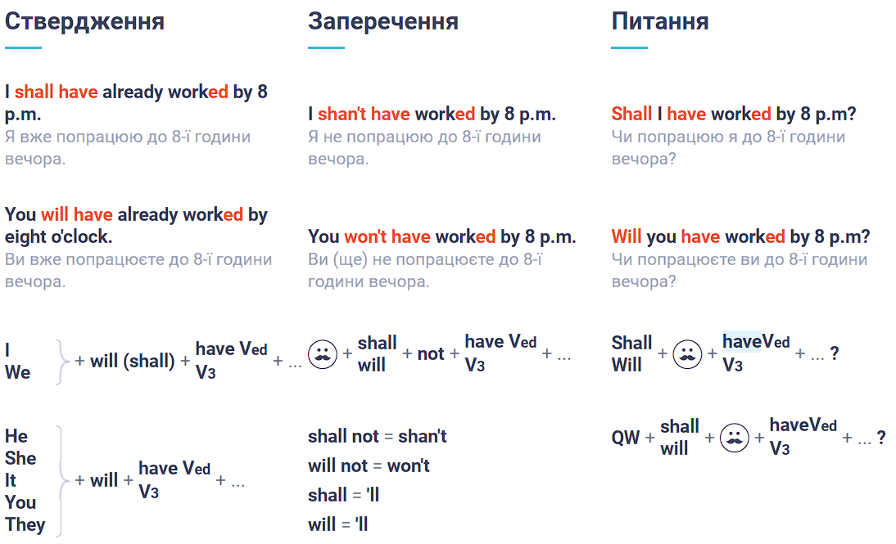
До змісту
Future Perfect Continuous
Future Perfect Continuous використовують для виразу дії, яка розпочавшись у певний момент, все ще буде продовжуватися в якийсь момент часу у майбутньому.
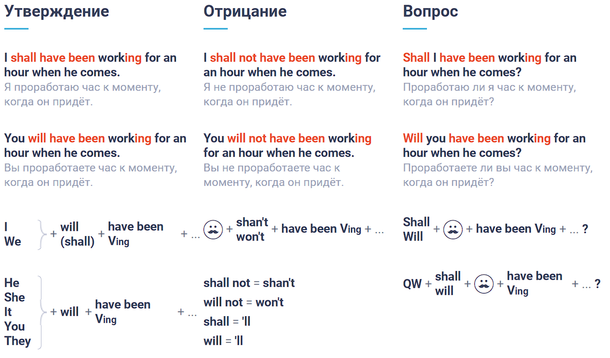
До змісту
Уверх